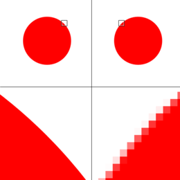

Er zijn twee soorten afbeeldingen, een vectorafbeelding en een bitmapafbeelding. Een bitmapafbeelding is een afbeelding die is opgebouwd uit afzonderlijke pixels. Dat betekent dat de foto niet echt scherp is en een bitmapafbeelding kost veel opslagruimte. Een vectorafbeelding is wel altijd scherp. Dat komt omdat een vectorafbeelding niet uit pixels bestaat maar uit omschrijvingen. Zoals de vorm, locatie, grootte en kleur. Wel een nadeel van deze manier is dat dit niet met een foto kan, omdat een foto bestaat uit verschillende kleuren en geen vormen.
Iedereen begrijpt wel dat je foto’s kan opslaan, maar hoe sla je een geluid op? Als je in een microfoon zingt zet die microfoon de trillingen van het geluid om in een elektrisch signaal. En een computer kan dat signaal weer omzetten naar digitale waarde, dit proces noem je samplen. Tijdens samplen wordt er om een bepaalde tijd gemeten wat de sterkte is. Die waardes kan je in een grafiek zetten. De gemiddelde muziek wordt gemeten van een sample rate van 44.100 Hz. Dit houdt in dat er 44.100 keer per seconde wordt gemeten. Hoe meer sample rates, hoe nauwkeuriger je resultaat is. Een filmpje die laat zien hoe samplen wordt gebruikt bij telefoneren.
Aan de linker kant van deze afbeelding zie je een vector afbeeling. Dat zie je omdat het een veel scherper beeld is en je ziet geen pixels. De rechterkant van de afbeelding zie je wel pixels en is niet scherp. Dat is dus een bitmap afbeelding.